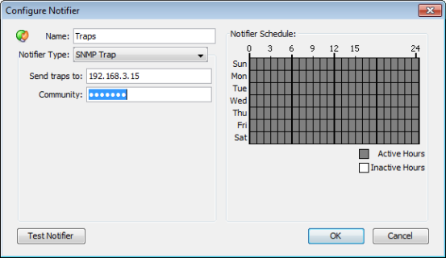

An SNMP trap is an unsolicited SNMP message that is sent to another device. Traps are sent to convey the data immediately, instead of waiting for that device to be polled at some future time.
InterMapper sends a SNMP Trap as a notification when a device goes into a particular state.

Configuring a Trap Notifier. Enter the IP Address or DNS name for the device to receive the trap, along with the SNMP Trap Community String.
In the notification Schedule window, select "SNMP Trap" from the dropdown menu, and fill in the IP address or DNS name of the device to receive the trap, and the SNMP Trap Community string.
InterMapper sends six pieces of information in the trap. All are encoded as OCTET STRING. This information is also available in ASN.1 format. in the Dartware MIB.
| Timestamp: | The current date and time, as a string in the format: MM/DD HH:MM:SS |
|
| Message: | DOWN, UP, ALARM, WARN, OK, or TRAP (See the Dartware MIB.) | |
| Device name: | The devices DNS name, as a string | |
| Condition: | The condition of the device, as it would be printed in the log file. | |
| Device Address: | The address of the device the triggered the notifier. | |
| Probe Type: | The type of probe that triggered the notifier |
InterMapper's traps contain the following MIB variables, taken from the Dartware MIB (described in detail in The Dartware MIB):
intermapperTimestamp = 1.3.6.1.4.1.6306.2.1.1.0
intermapperMessage = 1.3.6.1.4.1.6306.2.1.2.0
intermapperDeviceName = 1.3.6.1.4.1.6306.2.1.3.0
intermapperCondition = 1.3.6.1.4.1.6306.2.1.4.0